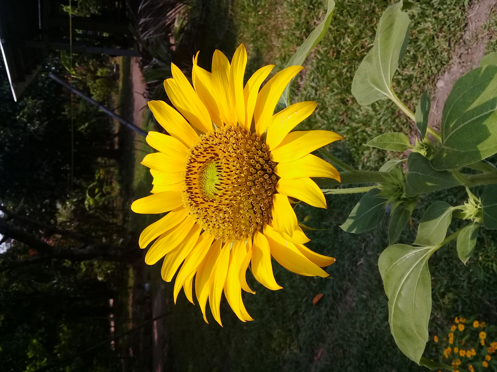

| Sunflower | |
|---|---|
|
Sunflower have a large and yellow beautiful flower when it blooms. As seen in the picture, the center
of its flower is circular as if it there's a small flower that also blooming, and when it is in full bloom, its seeds can be used.
In a sunflower head (flower), it contains so many seeds that you can no longer count but it depends on how big the sunflower head.
It's seed can be used again for planting a new sunflower and and you can multiply it more than you planted before.
How to plant? Before planting a sunflower, first requirement is the seeds, and choose a place where it is exposed to the sun 6-8 hours a day. Sunflower really loves the sun and just so it is called a sunflower because it grows from the sun and have a healthy flower when it blooms. Plant the seeds into a healthy soil that can be well-drained and plant it where no more than an each deep and about 6 inches apart or more. It is best when you plant it in summer and don't forget to water it if you think they need. Also observe for the insects that can harm your plant, especially caterpillar. Benefits Ecologically, sunflowers are copious nectar producers, providing food for pollinating bees, while the seeds and leaves provide food for such animals as birds, insects, and squirrels. For humans, all parts of the plant are used. The seeds of the common sunflower are eaten and are a source of a valuable oil (one of the most important vegetable oils). The leaves and stalks are used as fodder for livestock, and the flowers yield a yellow die. (New World Encyclopedia, 2008) References Sunflower. (2008, April 2). New World Encyclopedia, . Retrieved 15:52, July 10, 2022 from https://www.newworldencyclopedia.org/p/index.php?title=Sunflower&oldid=683495. |

Back |
| All rights reserved 2022 | Created by: Shaina Rolloque |